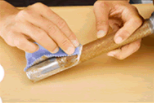
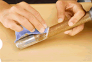
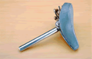
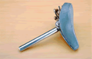

What is SABITORI KING?
SABITORI KING! The one can erase rust on your loving car!
Smooth to plating! Strict on rust! It won't hurt and won't come off!
SABITORI KING is a rust remover that take rust out of chromium. It does not remove chrome plating and remove rust as effectively as possible
Chrome shine revives with "SABITORI KING".
"SABITORI KING" is the rust remover developed by NAKARAI Inc., a super-famous professional group of plating many celebrities order.
If you try to take rust of chrome plating with ordinary rust remover, it tends to get scratched or peel off plating. However, this "SABITORI KING" is a rust remover dedicated to chrome plating that only works for rust on plating.
Therefore, it is possible to effectively remove the rust while protecting the plating. Also, the attached magic wipe has the effect of interlocking the removed rust, so it can work very efficiently.


 

 
